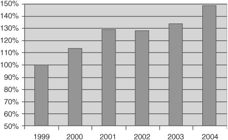

F.3. Compiling and LinkingF.3.1. Compiler OptionsGCC and the binary utilities provide some options supporting zSeries. You can find a detailed description of all GCC options in the manual Using the GNU Compiler Collection.[4] This manual provides a section exclusively devoted to the zSeries-specific options. We do not describe these options in full detail but rather give an overview. Also, it is likely that additional compiler options will be provided for new zSeries models and improvements might be offered for existing models. Check the most recent version of the GCC manual (see footnote 4) for details.
Figure F-3 shows a summary of the performance improvements achieved between 1999 and 2004 that suggests it is really worth exploiting GCC's zSeries-specific optimization options. Note that all data given in Figure F-3 was taken on the latest zSeries model available in the particular year and is normalized. Overlapping measurements have been used to scale when the measurements were taken on a new zSeries model. The publication "Contributions to the GNU Compiler Collection"[5] details how the measurements were conducted. Figure F-3. Performance increase due to improved compiler optimization Table F-3 shows the zSeries-specific code optimization options.
Table F-4 shows some options available to control and optimize stack growth.
Linux for zSeries has an important difference from other systems concerning shared libraries. The -fpic and -fPIC options cause the compiler to generate positioning-dependent code (pic) for use in shared or reentrant libraries. On zSeries, -fpic causes the Global Offset Table to be rather small, so you should instead use -fPIC for large shared libraries. If the linker reports a "relocation overflow" bug, check whether the project in question uses the -fpic option. Changing it to -fPIC might fix the problem. Note that you must use the same variant of this option for all compiler runs related to the same project. Last but not least, the options -mfused-madd, -mno-fused-madd, -mhard-float, and -msoft-float control the usage of floating-point operations. See the "Principles of Operation"[8],[9] for a complete description of the zSeries instruction set and architecture. In addition, some technical papers describe the internals of how GCC generates code for zSeries, available for download.[10],[11],[12]
F.3.2. Assembler CodeAny assembler code must, of course, be rewritten. See ESA/390 Principles of Operation[13] and z/Architecture Principles of Operation[14] for a complete description of the zSeries architecture and instruction set.
F.3.3. Stack Frame Layout and LinkageAlthough not immediately required for the development of application programs in C and C++, you might occasionally need detailed information about certain implementation issues such as register usage conventions or the stack frame layout. This information is found in the ELF Application Binary Interface Supplement (see footnotes 6 and 7). More conventions used when compiling for zSeries are described in "Porting GCC to the IBM S/390 Platform" (see footnote 11). F.3.4. Predefined SymbolsIf some code needs to be platform-dependent, you can use two predefined symbols in preprocessor expressions. __s390__ is set when compiling for zSeries in 31-bit or 64-bit mode, or when compiling for S/390. __s390x__ is set when compiling for zSeries in 64-bit mode. F.3.5. DebuggingMany Linux debugging tools are available on Linux for zSeries. One additional feature is available for Linux running under VM. Using VM's trACE command offers a convenient and powerful way to debug the whole Linux system. See the book z/VM CP Command and Utility Reference[15] for a reference on the trACE command. An introduction to debugging is given in Chapter 22 of the book Linux on the Mainframe.[16] A detailed description of how to debug is included in most Linux distributions in the file /usr/src/linux/Documentation/s390/debugging390.txt. For debugging more difficult problems, you can find information about register usage, stack frame layout, and other conventions in the ELF Application Binary Interface Supplement (see footnotes 6 and 7).
|